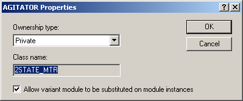

Ownership type for module blocks
When you drag a module class (such as control module class or equipment module class) to another module class (such as an equipment module class or unit class), the result is that a module block is created under the container class. (For example, in the previous illustration, the BLENDER unit class is a container that holds module blocks representing several control module classes as well as a module block for the equipment module class BLENDER_OUTLET. When the unit class BLENDER is instantiated, that is, when it is dragged to the process cell to become a unit module, all those contained module blocks will either be converted into actual control modules/equipment modules or they will need to be bound to modules.
If you open the Properties dialog for one of the module blocks, such as AGITATOR in the BLENDER unit class, you will see that there is a field for specifying the type of ownership--either Private or Shared.

Private is the default and means that when you create an instance of the container module, any contained module blocks are converted to actual modules. Selecting Shared creates an unbound module block. At some point, the unbound module blocks must be bound to an actual module instance. Sharing is typically done when there is one control module, such as a water inlet, that is used by a number of different unit modules. You don't want to create multiple copies of the control module; you simply want to bind the contained module block to the actual control module.